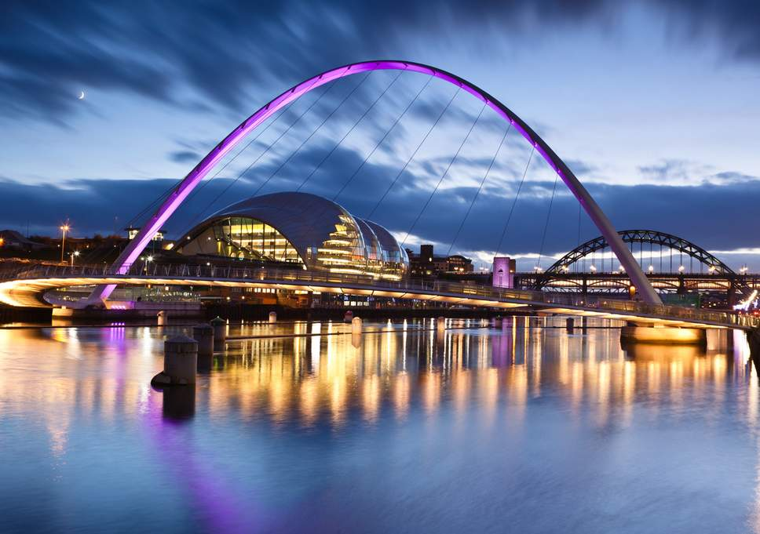
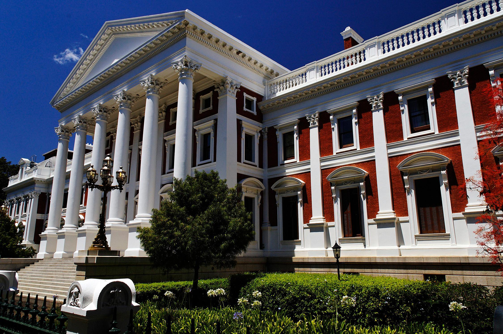
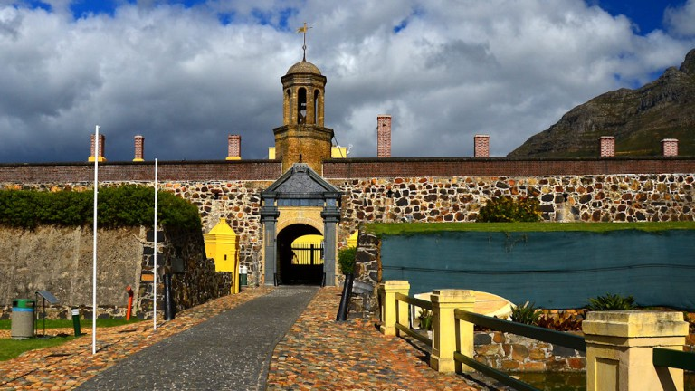
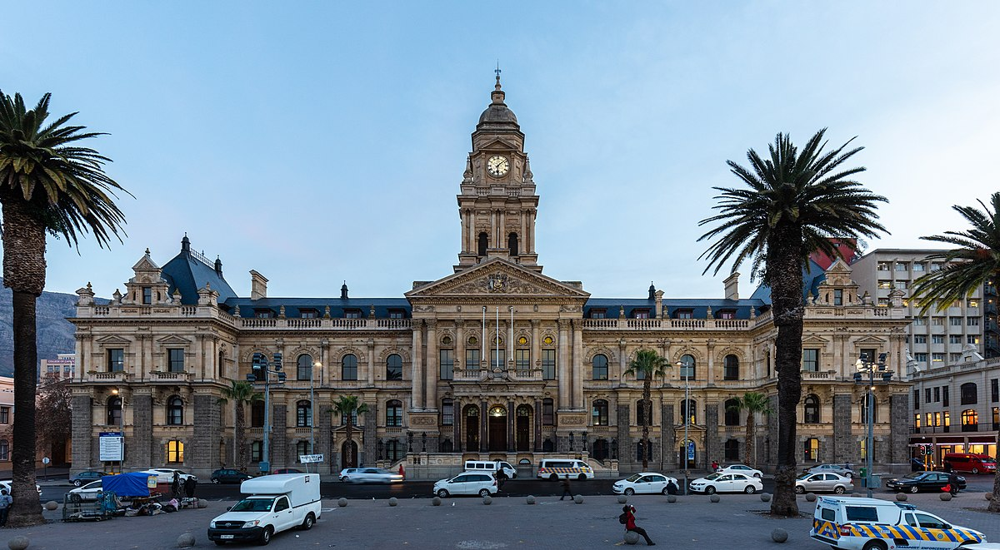

Newcastle
 I would like to vist Newcastle because its a great city it has a good vibe.I finded out more about this city when I watched a reality show called Geordie Shore.
A foreign language
I like the country because the capital city of it is Paris (City of love).
| English | French | French Pronouses |
|---|---|---|
| My name | Je m'appelle | Je =zhuh |
| Im hungry | Qu'est - ce que j'ai faim | J'ai faim |
| Goodbye | Au revoir | Au revoir |
Historic places in Cape Town

The House of Parliament of South Africa are situated in Cape Town.
The buildings consits of three main sections the original building,
was completed in 1884 and conditions constructed in the 1902 and 1980s.
was completed in 1884 and conditions constructed in the 1902 and 1980s.

A cape town landmark, the Castle of Good Hope, is a prime example of a "star fort".
Built between 1666 and 1679 by the Dutch East India Company.
It's the oldest existing colonial building in South Africa. It's position marks the original shoreline
before years of land reclamation changed the Table Bay costline.
It's the oldest existing colonial building in South Africa. It's position marks the original shoreline
before years of land reclamation changed the Table Bay costline.

Cape Town city hall is a large Edwardian building in cape town city centre which was built in
1905.
It is located on the Grand Parade to the west of the west of the castle and
is built from honey - coloured oolitic limestone imported from Bath in England.
It is located on the Grand Parade to the west of the west of the castle and
is built from honey - coloured oolitic limestone imported from Bath in England.